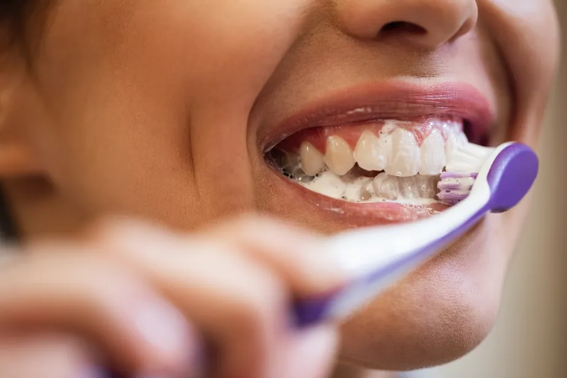
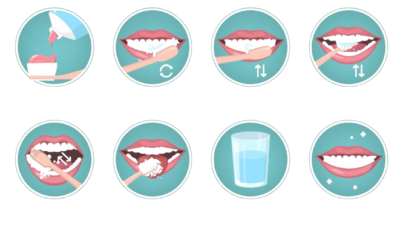
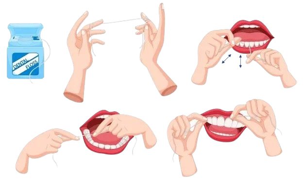

Higiene Bucal · Blog
Entenda a técnica correta de escovação, a importância do fio dental, por que o tártaro não deve ser removido em casa e o papel da limpeza profissional na saúde bucal.
Agendar avaliaçãoHigiene bucal
A boca abriga milhões de bactérias que, ao entrarem em contato com os restos de alimentos, formam a placa bacteriana sobre os dentes e a gengiva. Quando essa placa não é removida corretamente, ela se acumula e pode causar cáries, gengivite, mau hálito e outros problemas bucais.
A boa notícia é que a maior parte dessa prevenção acontece em casa, com hábitos simples e diários: escovar os dentes com a técnica correta, usar fio dental e limpar a língua. Esses cuidados, somados às visitas regulares ao dentista, são a base de uma saúde bucal duradoura.
Passo a passo

Etapas da escovação correta
Mais importante do que apenas escovar várias vezes ao dia é realizar uma escovação correta, com a técnica adequada. Confira o passo a passo:
Aplique o creme dental
Use uma quantidade equivalente a um grão de ervilha de creme dental com flúor sobre as cerdas da escova.
Posicione a escova
Incline as cerdas em um ângulo de 45° em relação à gengiva, cobrindo a linha entre o dente e a gengiva.
Escove a face externa
Faça movimentos curtos e suaves, de cima para baixo, cobrindo toda a superfície externa dos dentes.
Escove a face interna
Repita o mesmo movimento na parte interna dos dentes, próxima à língua e ao céu da boca.
Escove a superfície de mastigação
Faça movimentos de vai e vem sobre a superfície onde os dentes trituram os alimentos.
Limpe a língua
Escove suavemente a língua para remover bactérias que contribuem para o mau hálito.
Enxágue
Enxágue a boca com água para remover os resíduos de creme dental e alimentos.
Frequência
A recomendação é manter uma rotina regular de escovação dos dentes, especialmente após as principais refeições e antes de dormir.
A escovação noturna é muito importante, pois durante o período de sono ocorre redução do fluxo salivar, favorecendo a permanência de bactérias na boca.
Mais importante do que apenas escovar várias vezes ao dia é realizar uma escovação correta, utilizando a técnica adequada e incluindo o uso do fio dental na rotina.
Complemento essencial
A escova de dentes, sozinha, não alcança os espaços entre os dentes. É nessa região que o fio dental atua, removendo a placa bacteriana e os resíduos de alimentos que ficam retidos entre os dentes.

Fio dental
O ideal é utilizar o fio dental diariamente, com cuidado para não machucar a gengiva. Corte cerca de 40 cm de fio, enrole as pontas nos dedos médios e deslize suavemente entre os dentes, formando uma curva em "C" ao redor de cada dente. Evite forçar o fio contra a gengiva, pois isso pode causar sangramentos e lesões. Com a prática, o movimento se torna rápido e faz parte natural da rotina de higiene bucal.
Dúvida comum
Essa é uma dúvida muito comum. É importante entender que a placa bacteriana pode ser removida diariamente com uma boa escovação e o uso do fio dental.
Porém, quando essa placa se mineraliza, pode ocorrer a formação do tártaro dental. O tártaro aderido aos dentes não deve ser removido em casa com objetos pontiagudos ou instrumentos improvisados, pois isso pode causar danos aos dentes e à gengiva.
Nesses casos, é necessária uma limpeza dental profissional, realizada pelo dentista.
Cuidado profissional
Resultado de uma boa rotina de higiene bucal
Mesmo com uma excelente rotina de higiene bucal em casa, as consultas odontológicas são fundamentais para avaliar a saúde dos dentes e da gengiva.
A limpeza dental profissional ajuda na remoção de depósitos que não podem ser eliminados apenas com a escovação, além de permitir a identificação precoce de possíveis problemas bucais.
Manter visitas regulares ao dentista, associadas a uma boa escovação e ao uso diário do fio dental, é uma das melhores formas de cuidar do sorriso.
A prevenção começa em casa, mas depende também do acompanhamento profissional. Agende sua avaliação e limpeza dental com a Dra. Morgane Marion.
Falar no WhatsApp →Dúvidas frequentes
Quantas vezes por dia devo escovar os dentes?
A recomendação é manter uma rotina regular de escovação, especialmente após as principais refeições e antes de dormir. A escovação noturna é essencial, pois durante o sono há redução do fluxo salivar, favorecendo a permanência de bactérias na boca.
É preciso usar fio dental todos os dias?
Sim. O ideal é utilizar o fio dental diariamente, com cuidado para não machucar a gengiva, removendo a placa bacteriana dos espaços entre os dentes que a escova não alcança.
É possível remover o tártaro em casa?
Não. A placa bacteriana pode ser removida com escovação e fio dental, mas quando ela se mineraliza forma o tártaro, que não deve ser removido em casa com objetos pontiagudos, pois pode causar danos aos dentes e à gengiva. Esse procedimento exige limpeza profissional.
Por que fazer limpeza dental no dentista?
Porque a limpeza profissional remove depósitos que a escovação sozinha não elimina e permite identificar precocemente possíveis problemas bucais, mesmo em quem tem uma boa rotina de higiene em casa.
Para lembrar
Uma boa higiene bucal depende de hábitos simples realizados todos os dias. Escovar corretamente, usar creme dental com flúor, passar fio dental e limpar a língua são cuidados essenciais para manter dentes e gengivas saudáveis.
Lembre-se: a escovação correta ajuda a prevenir cáries, gengivite, mau hálito e o acúmulo de placa bacteriana, mas a limpeza profissional e o acompanhamento odontológico também são fundamentais.
Cuide do seu sorriso todos os dias e agende regularmente uma avaliação com seu dentista. A prevenção é sempre o melhor caminho para uma saúde bucal duradoura.